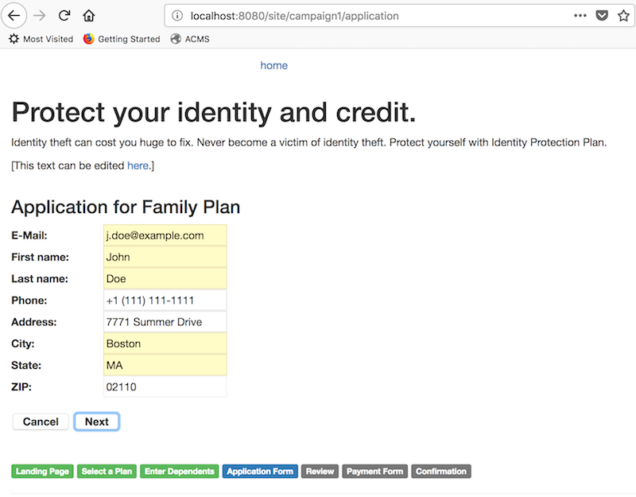
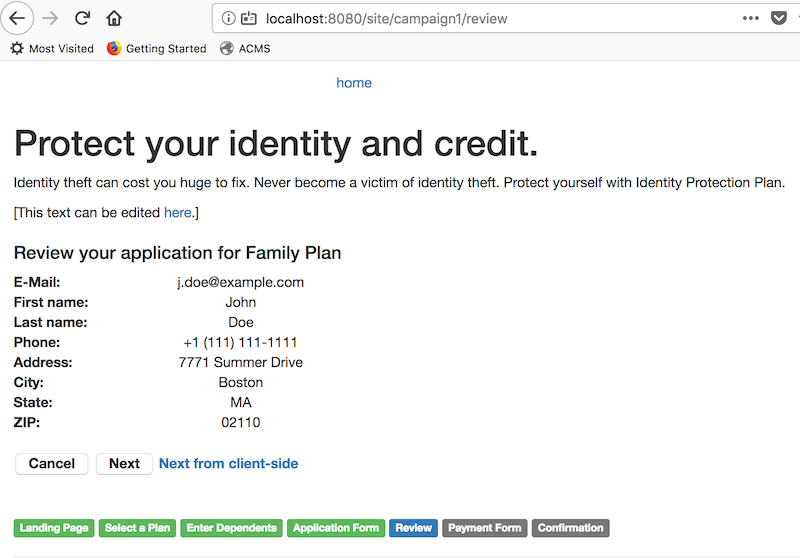
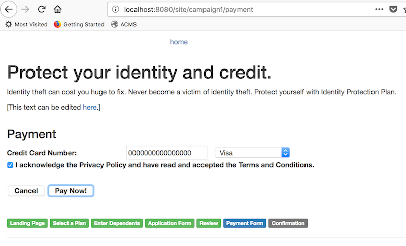
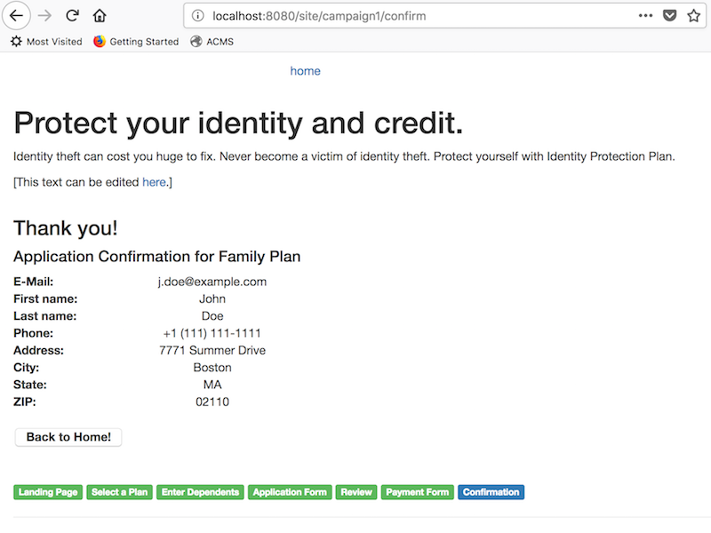

Demo Project
Build and Run
You can build and install the module locally first in the project root folder.
$ mvn clean install
And you can build and run the Demo project:
$ cd demo
$ mvn clean verify && mvn -Pcargo.run
For testing, visit http://localhost:8080/site/campaign1.
Demo Page Flow Definition
In the demo project, the Page Flow definition for the channel (http://localhost:8080/site/campaign1) is defined in the following document:

The above Page Flow Definition document defines all the page states, events and transitions in the document editor.
It is actually represents the following Finite State Machine diagram:

- Visitor starts the journey by visiting the Landing Page page state.
- On "start.quote" event (usually an event is triggerd by a user's action in the step page), it would be transitioned to Plan Selection page state.
- On "family.plan.selected" event, it would be transitioned to Dependents Entry page state, which would be transitioned to Application Entry page state afterward. Or on "single.plan.selected" event, it would be transitioned to Application Entry page state directly.
- On "application.submitted" event, it would be transitioned to Review page state.
- On "application.reviewed" event, it would be transitioned to Payment page state.
- On "payment.accepted" event, it would be transitioned to Confirmation page state, which leads to Final End state. Or on "payment.rejected" event, it would stay in the Payment page state.
- Application Entry, Review and Payment page states could be transitioned back to the Landing Page page state on "cancel.requested" event.
Example Page Flow Implementation in Demo Project
The demo project includes multiple pages and HST Components depending on the Page Flow Definition shown above. When you visit http://localhost:8080/site/campaign1, you may start a Page Flow instance with the following first step:
1. Page State: Landing Page
In this page state, when you click on "Start!" button, it posts the form to the HstComponent's #doAction() method which could trigger a page transition by sending an event.
2. Page State: Plan Selection
In this page state, when you click on "Next" button after selecting a plan, it posts the form to the HstComponent's #doAction() method which could trigger a page transition by sending an event.
3. Page State: Enter Dependents
In this page state, when you click on "Next" button after adding more than one dependent's first name and last name, it posts the form to the HstComponent's #doAction() method which could trigger a page transition by sending an event.
4. Page State: Application Form
In this page state, when you click on "Next" button after entering application information, it posts the form to the HstComponent's #doAction() method which could trigger a page transition by sending an event. If you didn't enter any required inputs, then it wouldn't trigger a transition, resulting in staying in the same page.
When you click on "Cancel" button, the HstComponent will send the "cancel.requested" event, which results in going back to the first page state.
5. Page State: Review
In this page state, when you click on "Next" button after reviewing the inputs, it posts the form to the HstComponent's #doAction() method which could trigger a page transition by sending an event.
When you click on "Cancel" button, the HstComponent will send the "cancel.requested" event, which results in going back to the first page state.
The "Next from client-side" button is placed for demonstration purpose. The client-side JavaScript action on the button's click, makes an AJAX call on an HST Resource URL to send an event which could trigger a page flow transition, and make a page redirection from the client-side based on the result.
6. Page State: Payment Form
In this page state, when you click on "Pay Now!" button after entering the inputs, it posts the form to the HstComponent's #doAction() method which could trigger a page transition by sending an event.
When you click on "Cancel" button, the HstComponent will send the "cancel.requested" event, which results in going back to the first page state.
7. Page State: Confirmation
In this page state, you completed the Page Flow instance!
